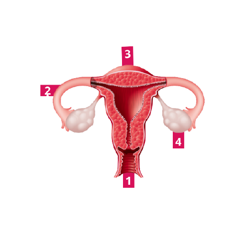
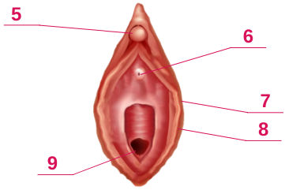

- Vagina*
É um espaço coberto por uma mucosa que possui aproximadamente 10cm de comprimento.
É por ali que sai o fluxo menstrual. E, para alguns/algumas, onde acontece a penetração
do pênis durante o ato sexual e o canal do parto.
- Tuba Uterina*
São tubas compostas por um canal, em formato de funil, tendo sua extremidade
coberta por franjas, uma ampola, fímbrias e por um istmo.
- Útero*
É um lugar oco onde é usado como caminho para os espermatozóides chegarem até as trompas, e
também abriga o feto durante gestações. A parte de cima é o colo do útero.
- Ovário*
É nesse lugar que os hormônios femininos são produzidos, assim como também os óvulos.

- Clítoris
É uma pequena massa de tecido que tem a função de
proporcionar prazer à mulher.
- Uretra
É um pequeno orifício que faz parte, exclusivamente, do
sistema urinário, pois é por onde a urina sai.
- Lábios Maiores
São dobras de tecido adiposo e pele que são cobertas de pelos.
- Lábios Menores
São dobras de tecido, assim como os Lábios Maiores, mas a diferença é
que não possui gorduras.
- Vagina
*Descrição no Número 1.
